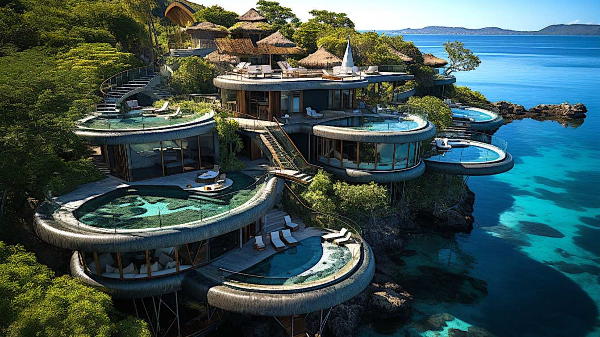
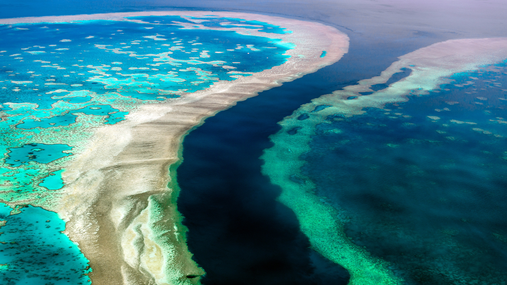

See the following Top Five best places across the Oceania

Denaru Island
Location: Western Viti Levu.
Best Time to Visit: May-October.
Info: A luxury resort hub featuring golf courses, beaches, and easy access to island-hopping tours

Mount Wilhelm
Location: Simbu Province.
Best Time to Visit: May-November.
Info: The country’s highest peak, popular for hiking and breathtaking views of the highlands.

Bora-Bora
Location: Society Islands.
Best Time to Visit: May-October.
Info: A paradise island known for luxury overwater bungalows, turquoise lagoons, and romantic getaways.

Great-Barrier-Reef
Location: Queensland.
Best Time to Visit: June-October.
Info: The world’s largest coral reef system, ideal for snorkeling, diving, and marine life exploration.

Milford sound zealand
Location: Fiordland National Park, South Island.
Best Time to Visit: November-March.
Info: A spectacular fjord offering boat cruises, waterfalls, and majestic mountain scenery